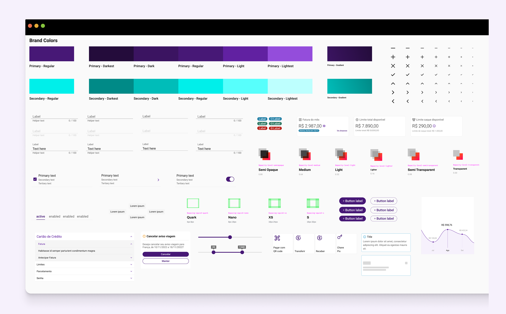
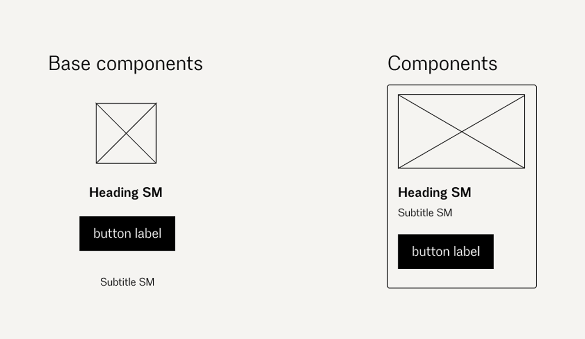
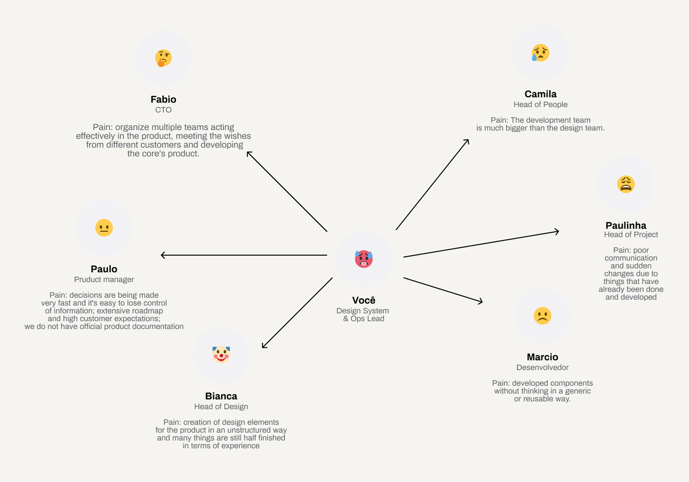
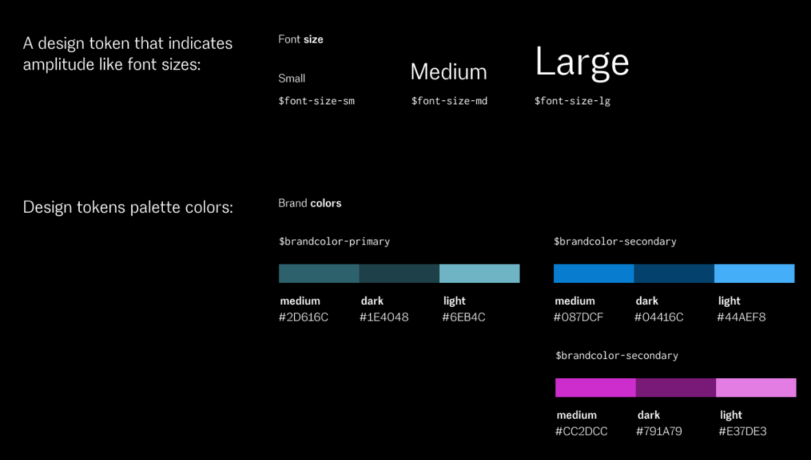
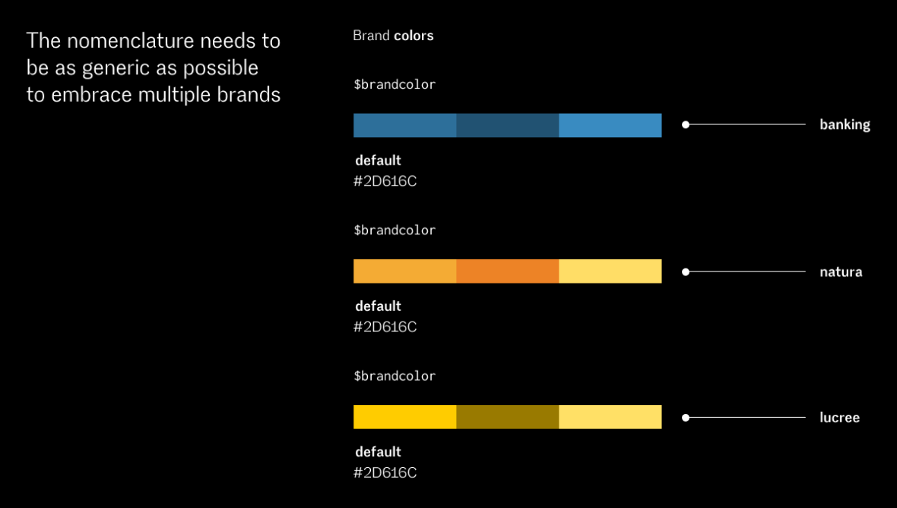
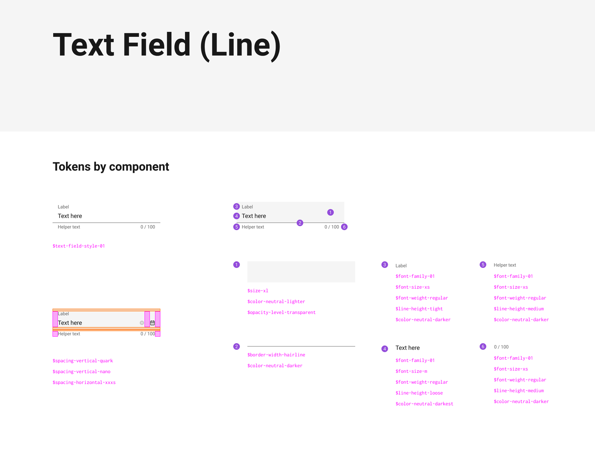
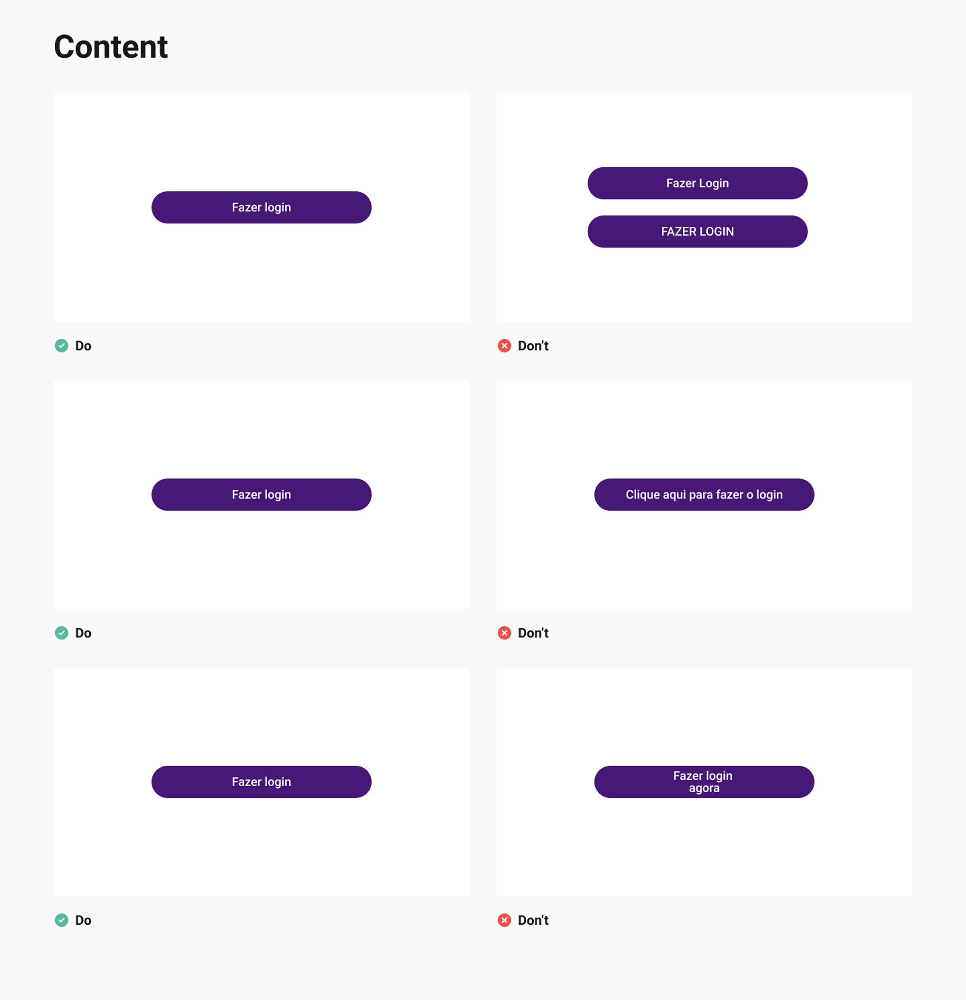

VIZIR design system
Role: Product designer
Team: Cross-functional (Designers, Developers, Product managers, Product Owners, Leadership)

THE BRIEF
Rapid growth sparked a new Design System, ensuring Vizir Bank scales smoothly with consistent, modular features for all white-label clients
OVERVIEW
The company gained many clients through the Banking project, which made it essential to develop a Design System to keep up with the rapid growth of the product. This way, we can continue to build future features smoothly and consistently.
THE CHALLENGE
Scaling Buy-In for White Label
With only two designers for over 100 developers and founders, our main challenge was proving that a "Design System" was a necessary business tool. The product's white-label nature made this harder; we needed a flexible architecture supporting multiple brands without breaking.
THE SOLUTION
Collaborative System Architecture
We gained support by rebranding the system as a collaborative tool and by involving developers and stakeholders in the early stages. To manage white-labeling complexity, we shifted from traditional Atomic Design to a more technical, token-based approach.

We've adopted Meiuca's three-layer Design System to make our work more efficient and tailored to each team's needs. The first layer is the Design System Core, which contains shared components used across all products of the same language; this is our main library.
The second layer is called Team Components, giving each team or product the flexibility to create custom components that enhance their unique user experience.
The third layer, 'Not in Design System,' includes components created externally—for example, if a product's metrics are low or interactions significantly reduce churn, this layer allows us to make exceptions.
Additionally, our team can evaluate whether a component from the second layer (Team Components) could be useful for other teams, and if so, it can be upgraded to the Core in the future.
RETHINKING THE ATOMIC DESIGN
Establishing a design system is a major challenge, especially when advocating for its importance in a tech-focused environment. With a team of over 100 developers and founders facing only two designers, we encountered immediate skepticism; the word "Design" in the title often seemed like a barrier to the rest of the team. We addressed this by reframing the system as a collaborative resource rather than just an aesthetic tool, ensuring that developers and stakeholders were involved from the very beginning.
We also rethought the traditional Atomic Design approach. While respecting its core principles, we found that the abstract distinctions between atoms, molecules, and templates often caused confusion. To develop a more practical and technical workflow, we adopted Meiuca's method. This enabled us to build from a clear, logical hierarchy: starting with Design Tokens to establish our source of truth, followed by base components as the fundamental units of our interface, which then seamlessly assemble into more complex components.
Haus: A Living Product for Unified Scale
We approached the Design System as a living product rather than a one-time project. Unlike projects that often get completed and set aside, a product grows and adapts with the business. To emphasize this, we named it Haus.
The name honors the Bauhaus, the innovative German school that brought together engineers, architects, and artists to create functional prototypes for industrial use. Following this approach, we involved stakeholders from all departments to identify their specific issues. We found that our design team faced ongoing component inconsistencies; development teams dealt with frequent rework; and the business experienced lower productivity. By presenting Haus as a collaborative solution to these common challenges, we made sure its benefits were recognized by everyone, not just designers.

Pain point mapping
Design tokens
The focus of Design Tokens is to standardize our style variables across our libraries and ensure everything is perfectly aligned between design and technology. It's important not to match the variables directly; for example, Blue cannot simply be called Blue. It is crucial that they are as semantic as possible to aid both maintenance and template logic. The core idea is that design tokens are a dependency of our libraries, allowing us to update them in one location and automatically reflect changes across all our products and technologies.
The style semantic variables include colours, typography, edge thickness and roundness, opacity, shadow levels, and so on. A variable might be the colour pixel or hexadecimal code, for instance. Semantics refer to the actual name of our token, which provides insight into its purpose or application.
Another key aspect of Design Tokens is the logic template, which represents a scenario in our current project involving multiple brands. Therefore, it is essential that the nomenclature remains as generic as possible, so that we only need to adjust the variables when necessary.


Component Inventory: visibility of inconsistencies
The next step was to create an inventory of components currently in the product. This inventory helped identify the needs of the Design System and develop a backlog for its components. Additionally, it clarified the inconsistencies within the Banking application today.
Another task involved mapping the base components and the other components. Base components are smaller parts like the Image, Heading, button, or subtitle. Components are more complex elements, such as a card that contains several base components inside.
THE HANDOFF
The handoff process often involves hands-on work. To make it smoother, we spend time understanding the Design Tokens used to build the components, their different states, and behaviors. This helps the team stay aligned and make the process as efficient as possible.
When developers aren't inspecting anything, we sit down with them to discuss how each component should work, sharing a clear recipe. It's important to find a common ground so that all components match perfectly, ensuring everything is consistent and cohesive.

DOCUMENTATION
Finally, we worked on the documentation, which was a necessary step to reinforce the idea that the Design System is a product. Thinking this way helps us consider what and how to communicate with our end users, meaning everyone who will use it daily. What do designers need? What about developers? And the Product Owner, Product Manager, etc.? It's essential to understand the team's needs, without necessarily documenting everything extensively, as it can be hard for everyone to read, and overly detailed documentation might lack key information. One thing we did was gather to identify what's needed to scale design globally across the enterprise.
So, we created documentation that introduces the product's design system and the technical documentation for development and design as user-friendly guides and best practices (produced this one in Figma).
It's nearly impossible to anticipate all questions when documenting. Therefore, understanding and tracking user difficulties helps improve the documentation, making it more concise and easier to follow, without being too lengthy. This approach allows us to continually improve and understand how people are engaging with it.
